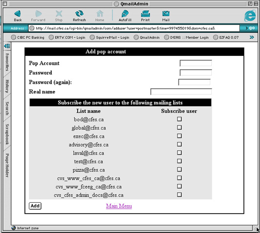
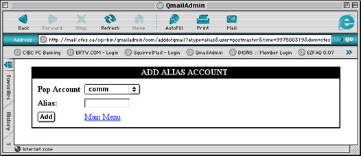
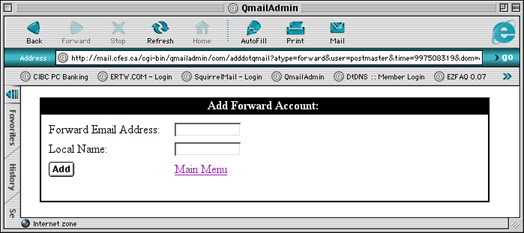
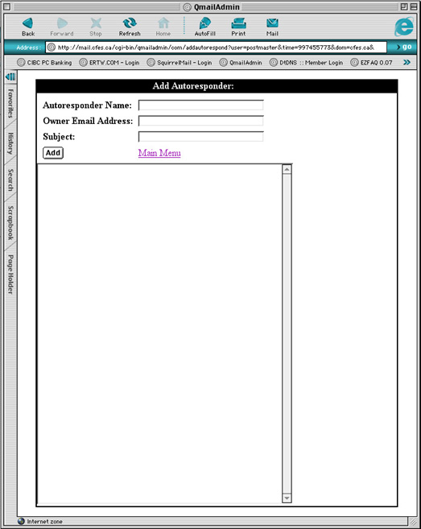
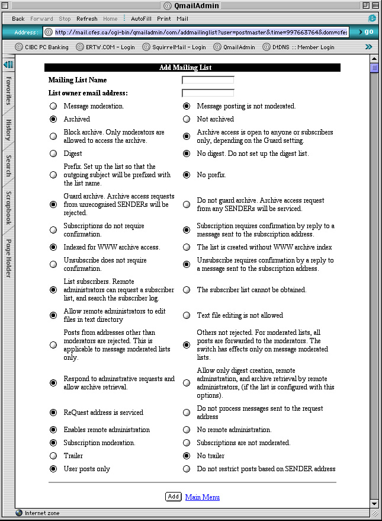

| >Main Admin Page >Email Administration Guide Index |

POP ACCOUNT: To create a new pop account, enter in a mailbox name. The mailbox name can be from 1 to 128 characters in length. Use letters and numbers and the dash. Do not use any other special characters or you may have problems checking the email account with certain email programs like Netscape, Eudora, Outlook Express, and others. Do not include the trailing @yourdomain.com part.
Examples of valid POP account names:
Examples of bad POP account names:
PASSWORD: Try to make your password 8 characters long or longer. Do not use words that you can find in the dictionary, names or dates. Passwords are the only thing protecting your email from being read by strangers. If you must use names, dates, and words, try to break them up with numbers and symbols.
Examples of good passwords:
Examples of bad passwords:
PASSWORD AGAIN: Enter the same password you chose in the previous step. Since you cannot see the characters as you type them, this step ensures against possible type-O's
REAL NAME: Enter the real name of the person who belongs to this email account. This is simply for the administrator's reference as it is not currently used in the system except by QmailAdmin.
SUBSCRIBE THE USER TO THE FOLLOWING EMAIL LISTS: If you had created any email lists (sometimes called list-servs) you can add this account to the list of recipients. This is discussed in detail later.
ADD: Click the button called ADD to create the account

POP ACCOUNT: Select the existing account that this alias account points to.
ALIAS: Enter the account name of the alias account.
ADD: Click the button called ADD to create the account.

FORWARD EMAIL ADDRESS: Enter the email address that this forward account will forward its mail to.
LOCAL NAME: Enter the account name of the new forward account.
ADD: Click the button called ADD to create the account.

Autoresponder Name: The account that this autoresponder is associated with.
Owner Email Address: The email address that the message is forwarded to.
Subject: The subject of the message received by the person who sends a message to this autoresponder account.
Message: The body of the message received by the person who sends a message to this autoresponder account.
When the New Mailing List command is executed you are presented with the following page:

Mailing List Name: The account that the mailing list will operate from.
List owner email address: Every list has an owner. This owner is the one who is referenced in most emails if a user wishes to talk to a real person. The address is given as <listname>-owner@<host.com> and emails sent this account are automatically forwarded to the owner.
| Enabled Text | Disabled Text | Comment |
|---|---|---|
| Message moderation (-m) | Message posting is not moderated (-M) [default] | This enables/disables message moderation for standard posting to the mailing list. This flag is required for the following options to work: (-o). It is recommended that this be left as non-moderated unless you are building an outgoing mailing list with the -o option or are concerned about what will be posted to the link. With moderation enabled all posting will first be sent to the moderator(s) and they will need to approve the emai before it is actually posted to the list. |
| Archived (-a) [default] | Not archived (-A) | Enables/disables message archiving. Archives can be retrieved using email based -get command (access it controlled by -b and -g options) or via a web interface if the -i option is enabled. Archiving is a nice feature for most mailing lists so that new members can read what was discussed in the past. Access to the archives via email is controlled by the -b option below. |
| Block archive. Only moderators are allowed to access the archive. (-b) | Archive access is open to anyone or subscribers only, depending on the Guard setting. (-B) [default] | Controls who can request the message archives using the get comnmand. If block archives in set (-b) only the moderator(s) of the mailing list can access the archives. If block is not set then the guard setting (-g) is used to determine if a non-moderator can access the archives. For most lists non-blocking (-B) is appropriate but if you wish the archives to be built but not accessed by most users set the list to be blocking (-b). |
| Digest (-d) | No digest. Do not set up the digest list. (-D) [default] | Enable/disable list digests. Digests are daily (sometimes more frequent based on volume) bundles of messages sent to a list. If a user does not want to receive the emails on an individual basis (because they just want to read them - they don't ever plan to reply) they may wish to receive the daily digest of the discussions for the day. For most lists a digest is unneccasary. The system administrator can enable this later if users request it. |
| Prefix. Set up the list so that the outgoing subject will be prefixed with the list name. (-f) | No prefix. (-F) [default] | Enable/disable message prefixes. This enables or disables the addition of a prefix to the subject of each message sent via the list. This is not recommended as a mailing list should not be changing the subject and this may interfere with other tags that users place in the subject. This is a good addition however for distribution lists where only the moderator is sending out informational message and the users do not post to the list (-m with -o) |
| Guard archive. Archive access requests from unrecognized SENDERs will be rejected. (-g) [default] | Do not guard archive. Archive access request from any SENDERs will be serviced. (-G) | This setting controls who can request the message archives with the get command. If the guard is set only subscribers can request the archives. If it is not set anyone can request the archives as long as they know the mailing list address. Note that this is not entirely secure as it is easy to fool the email system into believing the correct SENDER was sent. This setting is only valid if archives are enabled (-a) and they are not blocked (-B). |
| Subcriptions do not require confirmation. (-h) | Subscription requires confirmation by reply to a message sent to the subscription address. (-H) [default] | This setting controls whether a confirmation message is requires from a user before they are subscribed to a list. This prevents users from being subscribed by someone else to the mailing lists. If they are subscribed by someone else a confirmation message is sent the address being subscriber and the user must reply back to confirm the subscription. |
| Indexed for WWW archive access. (-i) [default] | The list is created without WWW archive index. (-I) | Enables/disables an archive index used for viewing the archives online. Note that this not put the archives online it merely prepares the list so that this can be done by the system administrator. |
| Unsubscribe does not require confirmation. (-j) | Unsubscribe requires confirmation by a reply to a message sent to the subscription address. (-J) [default] | This setting is the same as subscription confirmation except that applies when people are attempting to unsubscribe. |
| List Subscribers. Remote administrators can request a subscriber list, and search the subscriber log. (-l) [default] | The subscriber list cannot be obtained. (-L) | Controls whether the moderator(s) can obtain a list of subscribers using the list command. This is only valid if remote administration is enabled (-r). This setting is optional as the subscriber list can be obtained by the domain administrator using QmailAdmin. If however the list has a moderator that is not the domain administrator this setting is suggested. |
| Allow remote administrators to edit files in text directory. (-n) [default] | Text file editing is not allowed. (-N) | Controls whether the moderator(s) can edit the text files associated with the mailing list. These files include the header, trailer, and error messages. This is only valid if remote administration is enabled. This setting is suggested as this is the only way (currently) to change the text files. |
| Posts from addresses other than moderators are rejected. This is applicable to message moderated lists only. (-o) | Others not rejected. For moderated listsm all posts are forwarded to the moderators. The switch has effects only on message moderated lists. (-O) [default] | Limits posting to moderators only. This requests the list to be moderated (-m). If this is enabled only moderators can post to this list. This makes for an excellent distribution list where the users cannot reply back to the list - just the moderator. Other than that is not recommended. |
| Respond to administrative requests and allow archive retrieval. (-p) [default] | Allow only digest creation, remote administration, and archive retrieval by remote administrator, (if the list is configured with this options). (-P) | This enables/disables remote command for users. This setting will block all admin requests from users. They will not be able to subscribe/unsubscribe/get archives (if allowed) at all. This is not recommended as it usually requires more work for the list moderators who must perform they commands themselves. If security is of concern the subscription can be moderated (-s) and the archives blocked to not-moderators (-b). |
| ReQuest address is serviced (-q) [default] | Do not process messages sent to the request address (-Q) | Enables/disables the -request command. This command allows commands to be sent in the subject/body of an email as opposed to in the email address itself. For more information see the ezmlm manual or the ezmlm-request command. |
| Enables remote administration (-r) [default] | No remote administration (-R) | Enables/disables remote administration. It is recommended this be left on so that mderators can make changes the list. This is required for file editing (-n) and user listing (-l). |
| Subscription moderation (-s) [default] | Subscriptions are not moderated (-S) | This setting controls if people can subscribe to the list without confirmation by a moderator. This is a necessary for most lists that are not truely public (exec lists, etc.). With this setting enabled each subscription request is forward to the moderator(s) where they can confirm or deny the subscription. |
| Trailer (-t) | No trailer (-T) [default] | Enables or disables the message trailer. This trailer defaults to containing information about unsubscribing and getting general help. The trailer is editable if text file editing is enabled(-n) for remote adminstration(-r). |
| User posts only (-u) [default] | Do not restrict posts based on SENDER address (-U) | This limits posting to the list for valid users only. If this is combined with message moderation (-m) it instead means that valid senders may post and non-valid senders are sent to the moderator(s) for confirmation. |
For more information about ezmlm, our mailing list software, please see the ezmlm manual with information for owners, moderators, and users.
Below are some possible configurations for a mailing list.
This type of list is very common. In this setup the following is done:
In order to setup this list the following setting flags are used (as detailed above):
This type of list is also very common for groups that wish to have private conversations (like executives). In this setup the following is done:
In order to setup this list the following setting flags are used (as detailed above):
This type of list is intended as a distribution only list, possibly for updates or announcements:
In order to setup this list the following setting flags are used (as detailed above):
Even if the being created is not being moderated for postings it is a good idea to add a moderator in the event that you have configured the subscribers to be moderated or non-subscriber postings to be moderated. It may also be desirable to have a moderator setup simply to edit some of the text files for the mailing list. This includes the mailing list list trailer (if enabled).
| >Main Admin Page >Email Administration Guide Index |